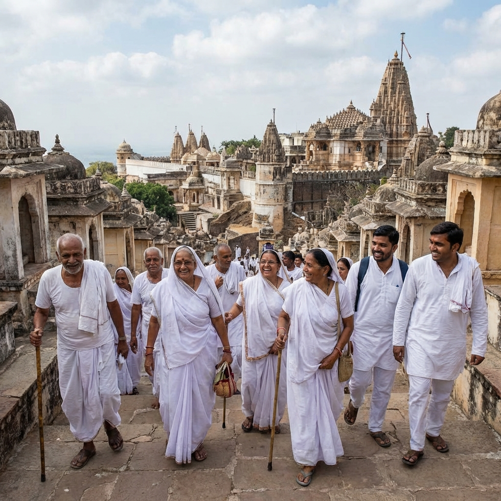
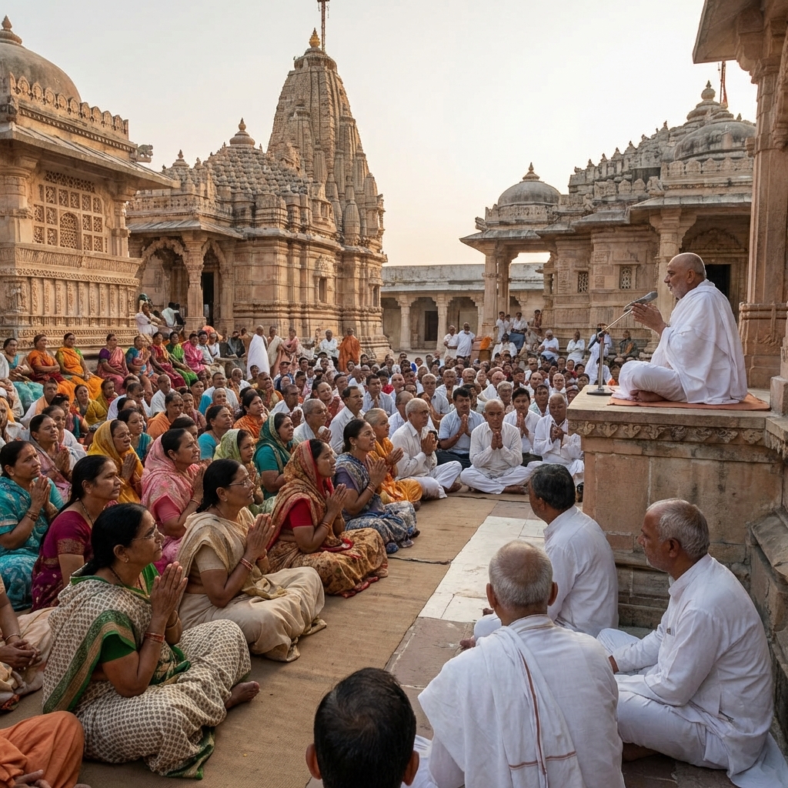
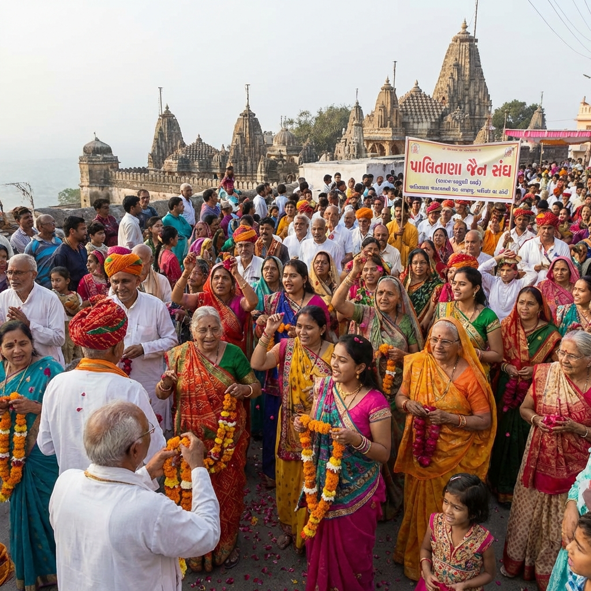

Captured Moments
Glimpses of Divine Joy
Relive the beautiful moments from Chovihar Chhath Saat Jatra



A Divine 7-Day Spiritual Pilgrimage to Palitana's Sacred Shatrunjay Hill
Chovihar Chhath Saat (चोवीहार छठ) is one of the most revered pilgrimages in the Shvetambara Jain tradition, combining spiritual austerity with devotional journey.
The word "Chociyaar" derives from Chovihar — a complete fast where devotees abstain from food and water from sunset to sunrise the next day. "Chat" signifies the sixth day of the lunar fortnight, considered highly auspicious for spiritual practices.
This 7th edition, organized by PrabhuPremi Trust, brought together over 500 devotees from across India for a transformative 7-day journey to Palitana — home to the world's largest cluster of Jain temples atop the sacred Shatrunjay Hill.

"When feet walk with devotion, the soul flies towards liberation."
— Jain ProverbEach day brought new experiences, deeper connections, and spiritual awakening
Early morning departure from Mumbai in AC luxury buses. En route pravachan by Pandit Shri Vinaychandra Ji on the significance of yatra. Evening arrival at Palitana with welcome aarti and community dinner.
Pre-dawn start at 4:00 AM. Climbed the 3,500 sacred steps with devotional bhajans echoing through the morning mist. First darshan at Adinath temple. Witnessed the breathtaking sunrise over 863 temples.
The sacred Chovihar day. Complete fast observed by 400+ devotees. Extended samayik sessions, pratikraman, and meditation in the ancient temple complex. Evening bhakti sandhya with 108 diyas.
Rest day for elderly yatris. Morning pravachan on Uttaradhyayan Sutra. Afternoon visit to Taleti temples. Special session on Jain philosophy for youth. Evening cultural program with traditional stavans.
Second climb for those seeking deeper spiritual merit. Special pooja at Ramapole temple. Visited the Samavasaran of Bhagwan Rishabh Dev. Afternoon community seva — cleaning temple premises.
Mass community kitchen — prepared and served bhojan for 5,000+ local devotees. Blood donation camp organized by trust volunteers. Evening mahapuja with collective chanting of Namokar Maha Mantra.
Final sunrise ascent for those with remaining energy. Farewell aarti at base temple. Emotional departure with promises to return. Evening arrival in Mumbai with hearts full of divine blessings.
What made this pilgrimage truly unforgettable
Climbed the sacred 3,500 steps before dawn, passing through ancient gateways adorned with intricate carvings. At the summit, 863 magnificent temples awaited — each a testament to centuries of devotion.
Each evening, revered scholars shared wisdom from ancient texts — Uttaradhyayan Sutra, Tattvartha Sutra, and Kalpa Sutra. These discourses illuminated the path of right knowledge and conduct.
Pure Jain vegetarian meals prepared with love and devotion. Shared in unity, breaking barriers of status and age. A true celebration of community and satvik living at the foothills of Shatrunjay.
Every evening transformed into a celebration of devotion. Traditional stavans, soul-stirring bhajans, and the rhythmic clapping of hundreds created an atmosphere of pure spiritual ecstasy.
Families from Mumbai, Ahmedabad, Jaipur, and beyond came together. Children played while elders shared stories. New friendships formed, and the sense of community grew stronger each day.
Witnessing the sun rise over the temple spires of Shatrunjay is an experience beyond words. The first rays illuminating the golden kalash, the morning aarti — moments frozen in devotion.
What our pilgrims say about their transformative journey
"At 72, I never thought I could climb Shatrunjay again. But with the support of young volunteers and doli service arranged by the trust, I not only climbed but felt 20 years younger in spirit."
"This was my 12-year-old son's first yatra. Seeing him wake up at 4 AM without complaint, climb every step with enthusiasm, and actually enjoy the pravachans — priceless for a parent."
"The organization was impeccable. From luxury buses to satvik bhojan to medical support — everything was thought through. We could focus entirely on our spiritual practice."
Relive the beautiful moments from Chovihar Chhath Saat Jatra


A complete spiritual experience, thoughtfully organized
Round-trip journey in comfortable AC buses with experienced drivers
6 nights accommodation in clean, well-maintained dharamshalas
All vegetarian meals — breakfast, lunch, dinner, and snacks
Daily pravachans, samayik sessions, and bhakti sandhya
24/7 medical team with first aid and emergency services
Palki/doli arrangements for elderly and differently-abled yatris
Experience the spiritual transformation of Palitana. Our next Chovihar Chhath Saat Jatra is being planned for late 2026. Register your interest now.